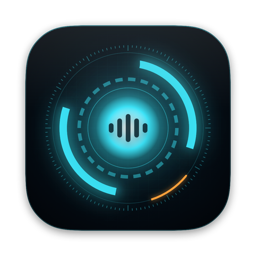

Hush
A private journal for text, voice and video. Everything is encrypted on your Mac before it's stored or synced.
Write an entry, talk through your day, or record a video log with a heads-up display drawn over it. Hush transcribes what you say as you say it, on your Mac, and keeps it all behind a passphrase only you know.
Locked with your passphrase
AES-256-GCM for every entry, recording and transcript. Unlock with your passphrase or Touch ID.
Live transcription
Speech is turned into text by Apple's on-device recogniser. Audio never leaves the Mac to be transcribed.
Google Drive, ciphertext only
Sign in with Google to keep an encrypted copy in a hidden app folder. Google can't read it.
How sync works
Sync is optional. If you turn it on, Hush asks Google for one Drive permission, drive.appdata: a hidden folder that only Hush can use. Hush can't see any of your other Drive files, and Google stores only encrypted data it can't open. Details are in the privacy policy.
Requirements
macOS 15 or later, on Apple silicon or Intel.